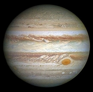
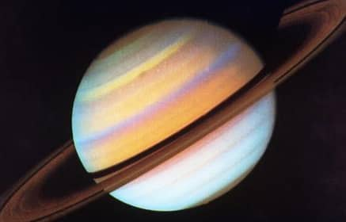
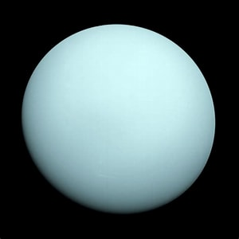
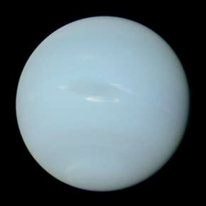

Overview
The Solar System consists of the Sun, eight planets, their moons, asteroids, comets, and other celestial bodies. The Sun is the center of the Solar System and provides the necessary energy for life on Earth.
Planets of the Solar System
Mercury

The closest planet to the Sun, known for its extreme temperatures.
Venus

Venus has thick clouds and a very hot surface due to a runaway greenhouse effect.
Earth

The only known planet to support life, with water, oxygen, and a friendly atmosphere.
Mars

Mars, the "Red Planet", has the largest volcano and canyon in the Solar System.
Jupiter
The largest planet in the Solar System, known for its Great Red Spot.
Saturn
Famous for its stunning rings made of ice and rock particles.
Uranus
A gas giant with a tilted axis, making it appear to roll on its side.
Neptune
The most distant planet from the Sun, known for its deep blue color and strong winds.
Fun Facts
- It would take 225 million years for the Earth to orbit the Sun once.
- The Sun is 99.86% of the mass of the entire Solar System!
- Jupiter's Great Red Spot has been storming for over 350 years!
- Saturn's moon Titan has lakes made of methane!